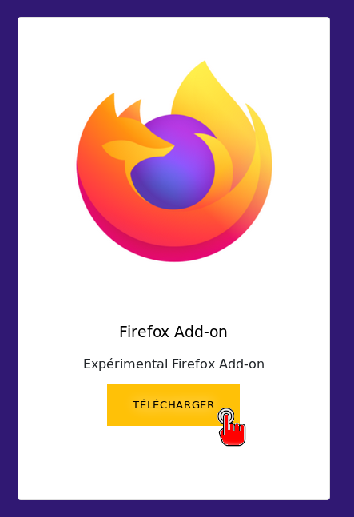
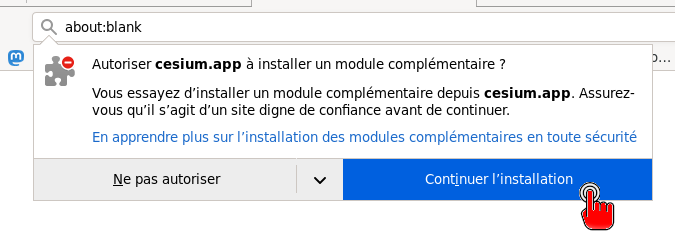
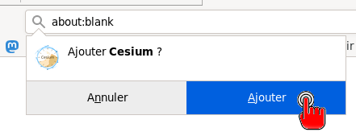
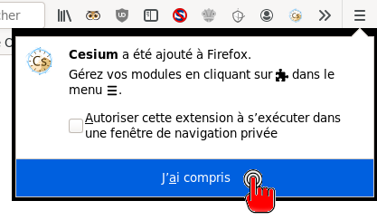
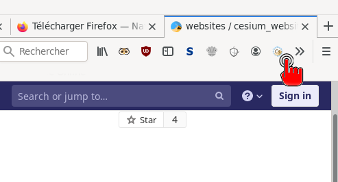

Installer Cesium dans Firefox
Ce tutoriel vous explique comment installer Cesium comme extension de navigateur pour Firefox.
Vous utiliserez Cesium dans Firefox, mais pas sur un site web. Tout se passera dans votre ordinateur !
Si vous avez Firefox sur smartphone, ce tutoriel fonctionnera aussi.
- Si vous ne l'avez pas déjà, installez Firefox
- Ouvrez Firefox et rendez-vous sur la page de téléchargement
- Cliquez sur : Firefox Add-on > Télécharger

- Acceptez l'installation (deux boutons)


- Et voilà ! Pour lancer Cesium, cliquez sur le logo en haut à droite.

